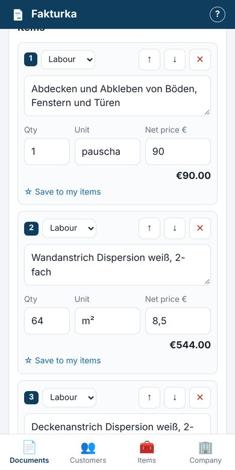
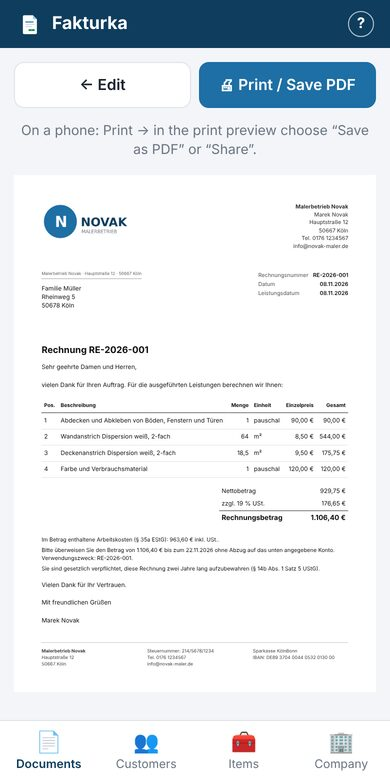
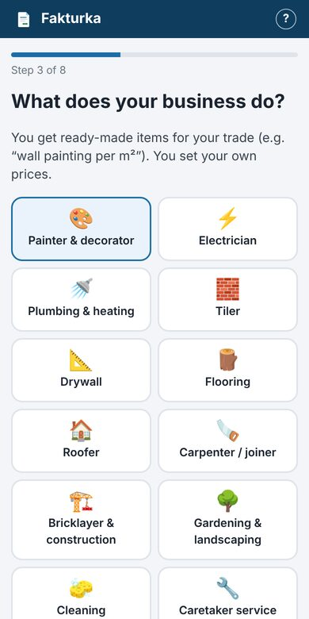
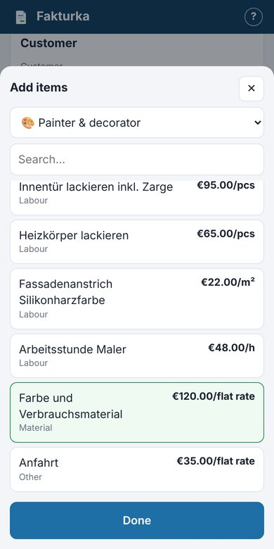

The invoicing app for tradespeople and small businesses in Germany. Create a proper German Rechnung or Angebot in 2 minutes – on your phone, right from the job site.


You work in your language, your customer gets a clean German document – with every mandatory detail.
Use the app in English, Polish, Turkish, Russian, Italian, French or German. Documents go out in German – or in another language for customers abroad.
Painter, electrician, tiler, roofer, cleaning, removals and more. Ready-made line items – just set your prices.
Customer accepted your Angebot? Turn it into a Rechnung with one tap. No retyping.
Kleinunternehmer (§19), construction reverse charge (§13b), labour costs for private customers (§35a) – the right notes are added automatically.
Missing tax number, IBAN or address? The app warns you before an incomplete invoice goes out.
A clean A4 document with your logo. Save it as PDF and send it by email or WhatsApp.
Your invoice list shows what’s outstanding and what’s overdue. No more forgotten payments.
Everything is stored on your device. No account, nothing sent to a server.
Three steps. Your first quote is done before your coffee is.

A short guide asks for your language, trade, company details and logo – and explains each step.

Pick services from your trade template and enter quantities – totals and VAT are calculated for you.
Preview, save as PDF, send it to your customer. Done.
Every trade comes with ready-made line items in 7 languages. Missing yours? Let us know.
Short and in plain English – what must be on an invoice, when you charge no VAT, and what changes with e-invoicing.
Yes. During the beta you can use everything for free, without an account. If paid features are added later (for example cloud backup or e-invoices), you will be told well in advance.
Only on your device, in your browser. It is not sent to any server. That is why you should download a backup once a month (Company → Backup), especially before switching phones.
The app prints all mandatory details required by § 14 UStG and warns you when something is missing (such as your tax number). You remain responsible for your data and the VAT rate you choose – if in doubt, ask your tax advisor (Steuerberater).
Yes – and in Polish, Turkish, Russian, Italian or French. For customers and the tax office in Germany, German is the safest choice; the tax office may ask for a translation of invoices in other languages. You can choose the language for each document.
Yes – in your browser (Safari, Chrome). You can add it to your home screen and open it like a normal app. It works the same on a computer.
Not yet – that is the next big feature. The obligation to send e-invoices to other businesses starts in 2027 and 2028. Invoices to private customers can remain normal PDFs.
No. Fakturka helps you create quotes and invoices. Bookkeeping, tax returns and advice stay with your Steuerberater.